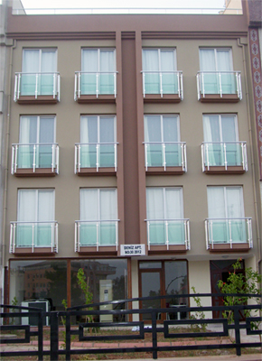

Dairelerimiz tek kişilik iki odadan oluşmaktadır. Tüm Odalarımızda Standart olarak:
- Her dairede mutfak
- Her dairede WC, banyo
- Her dairede çamaşır makinesi
- Her dairede buzdolabı
- Her dairede ocak ve aspiratör
- Her odada baza, başlık, ortopedik yatak
- Her odada çalışma masası ve sandalye
- Her odada iki kapılı gardırop
- Her odada LCD TV
- Herkesin kullanabileceği ortak çamaşır kurutma makinesi